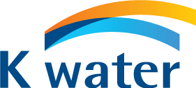

<!doctype html>
<html lang="ko">
<head>
<meta charset="utf-8" />
<meta name="viewport" content="width=device-width, initial-scale=1" />
<title>K-water AI러닝톤 2026 · 댐 대시보드</title>
<link rel="stylesheet" href="vendor/pretendard/pretendard.css" />
<script src="vendor/tailwind.js"></script>
<script src="vendor/react.development.js"></script>
<script src="vendor/react-dom.development.js"></script>
<script src="vendor/babel.min.js"></script>
<script src="vendor/lucide.min.js"></script>
<style>
  :root{
    --kw-navy:#003876;
    --kw-navy-deep:#002a59;
    --kw-cyan:#00A8E1;
    --kw-cyan-soft:#e6f7fd;
    --kw-bg:#f4f7fb;
    --kw-ink:#0b1f3a;
    --kw-ink-2:#3b5575;
    --kw-ink-3:#6a7e9a;
    --kw-line:#e3eaf3;
  }
  html,body,#root{height:100%;}
  body{
    margin:0;
    font-family:"Pretendard Variable", Pretendard, -apple-system, BlinkMacSystemFont, "Apple SD Gothic Neo", "Noto Sans KR", "Segoe UI", Roboto, sans-serif;
    background:var(--kw-bg);
    color:var(--kw-ink);
    -webkit-font-smoothing:antialiased;
    letter-spacing:-0.01em;
  }
  /* subtle background mesh */
  .kw-mesh::before{
    content:"";
    position:absolute; inset:0;
    background:
      radial-gradient(800px 500px at 88% 10%, rgba(0,168,225,0.10), transparent 60%),
      radial-gradient(700px 600px at 10% 95%, rgba(0,56,118,0.08), transparent 60%);
    pointer-events:none;
  }
  /* scrollbar */
  .kw-scroll::-webkit-scrollbar{width:6px;}
  .kw-scroll::-webkit-scrollbar-thumb{background:#c8d3e2;border-radius:999px;}
  .kw-scroll::-webkit-scrollbar-thumb:hover{background:#9aacc5;}
  /* glass panel */
  .kw-glass{
    background:rgba(255,255,255,0.78);
    backdrop-filter: blur(20px) saturate(140%);
    -webkit-backdrop-filter: blur(20px) saturate(140%);
    border:1px solid rgba(255,255,255,0.6);
    box-shadow: 0 18px 50px -18px rgba(0,40,90,0.25), 0 2px 6px rgba(0,40,90,0.06);
  }
  /* watermark */
  .kw-watermark{
    background: linear-gradient(180deg, rgba(0,56,118,0.06), rgba(0,168,225,0.04));
    -webkit-background-clip:text; background-clip:text; color:transparent;
  }
  /* marker pulse */
  @keyframes kw-pulse {
    0%   { transform: scale(0.9); opacity:.85; }
    70%  { transform: scale(2.2); opacity:0; }
    100% { transform: scale(2.2); opacity:0; }
  }
  .kw-pulse{ animation: kw-pulse 2.2s ease-out infinite; }
  /* fade-in for map */
  @keyframes kw-fade { from { opacity:0; transform: scale(0.985); } to { opacity:1; transform:scale(1); } }
  .kw-fade{ animation: kw-fade 380ms cubic-bezier(0.2,0,0,1) both; }
  /* accordion smooth */
  .kw-acc{ transition: grid-template-rows 280ms cubic-bezier(0.2,0,0,1); display:grid; }
  .kw-acc > div{ overflow:hidden; }
  /* dam row hover bar */
  .kw-row{ position:relative; }
  .kw-row::before{
    content:""; position:absolute; left:0; top:8px; bottom:8px; width:3px; border-radius:3px;
    background: var(--kw-cyan); transform: scaleY(0); transform-origin:center; transition: transform 180ms ease;
  }
  .kw-row:hover::before, .kw-row.is-active::before{ transform: scaleY(1); }
  /* toggle bracket animation */
  .kw-bracket{ transition: transform 320ms cubic-bezier(0.2,0,0,1); }
</style>
</head>
<body>
<div id="root"></div>

<script type="text/babel" data-presets="react">
const { useState, useMemo, useRef, useEffect } = React;

/* ---------- icons (inline minimal lucide-style) ---------- */
const Icon = ({ d, size=18, sw=2, className="", children }) => (
  <svg width={size} height={size} viewBox="0 0 24 24" fill="none"
       stroke="currentColor" strokeWidth={sw} strokeLinecap="round" strokeLinejoin="round"
       className={className}>
    {children || <path d={d} />}
  </svg>
);
const ChevronRight = (p)=> <Icon {...p}><polyline points="9 6 15 12 9 18"/></Icon>;
const ChevronDown  = (p)=> <Icon {...p}><polyline points="6 9 12 15 18 9"/></Icon>;
const MapPin       = (p)=> <Icon {...p}><path d="M20 10c0 6-8 12-8 12s-8-6-8-12a8 8 0 0 1 16 0Z"/><circle cx="12" cy="10" r="3"/></Icon>;
const Building2    = (p)=> <Icon {...p}><path d="M6 22V4a2 2 0 0 1 2-2h8a2 2 0 0 1 2 2v18"/><path d="M6 12H4a2 2 0 0 0-2 2v8h4"/><path d="M18 9h2a2 2 0 0 1 2 2v11h-4"/><path d="M10 6h4"/><path d="M10 10h4"/><path d="M10 14h4"/><path d="M10 18h4"/></Icon>;
const TreeIcon     = (p)=> <Icon {...p}><path d="M12 2 7 9h3v4h4V9h3z"/><path d="M12 13v8"/></Icon>;
const Landmark     = (p)=> <Icon {...p}><line x1="3" y1="22" x2="21" y2="22"/><line x1="6" y1="18" x2="6" y2="11"/><line x1="10" y1="18" x2="10" y2="11"/><line x1="14" y1="18" x2="14" y2="11"/><line x1="18" y1="18" x2="18" y2="11"/><polygon points="12 2 20 7 4 7"/></Icon>;
const Waves        = (p)=> <Icon {...p}><path d="M2 6c.6.5 1.2 1 2.5 1S6.4 6.5 7 6s1.2-1 2.5-1 1.9.5 2.5 1 1.2 1 2.5 1 1.9-.5 2.5-1 1.2-1 2.5-1S20.4 6.5 21 7"/><path d="M2 12c.6.5 1.2 1 2.5 1s1.9-.5 2.5-1 1.2-1 2.5-1 1.9.5 2.5 1 1.2 1 2.5 1 1.9-.5 2.5-1 1.2-1 2.5-1 1.9.5 2.5 1"/><path d="M2 18c.6.5 1.2 1 2.5 1s1.9-.5 2.5-1 1.2-1 2.5-1 1.9.5 2.5 1 1.2 1 2.5 1 1.9-.5 2.5-1 1.2-1 2.5-1 1.9.5 2.5 1"/></Icon>;
/* extended site icons — shared keys with coordinate-picker.html */
const Plaza        = (p)=> <Icon {...p}><rect x="3" y="3" width="18" height="18" rx="2"/><circle cx="12" cy="12" r="3"/><path d="M12 3v3M12 18v3M3 12h3M18 12h3"/></Icon>;
const Park         = (p)=> <Icon {...p}><circle cx="12" cy="9" r="5"/><path d="M12 14v7"/><path d="M8 21h8"/></Icon>;
const DamIcon      = (p)=> <Icon {...p}><path d="M5 4v16"/><path d="M19 4v16"/><path d="M5 11c2.3 1.4 4.7 1.4 7 0s4.7-1.4 7 0"/><path d="M5 16c2.3 1.4 4.7 1.4 7 0s4.7-1.4 7 0"/></Icon>;
const Mine         = (p)=> <Icon {...p}><path d="M3 21h18"/><path d="M4 21v-6a8 8 0 0 1 16 0v6"/><path d="M9 21v-4a3 3 0 0 1 6 0v4"/></Icon>;
const Road         = (p)=> <Icon {...p}><path d="M4 21 9 3"/><path d="M20 21 15 3"/><path d="M12 5v3M12 11v3M12 17v3"/></Icon>;
const Layers       = (p)=> <Icon {...p}><polygon points="12 2 2 7 12 12 22 7 12 2"/><polyline points="2 17 12 22 22 17"/><polyline points="2 12 12 17 22 12"/></Icon>;
const PanelLeftOpen= (p)=> <Icon {...p}><rect x="3" y="3" width="18" height="18" rx="2"/><line x1="9" y1="3" x2="9" y2="21"/><polyline points="14 15 17 12 14 9"/></Icon>;
const PanelLeftClose=(p)=> <Icon {...p}><rect x="3" y="3" width="18" height="18" rx="2"/><line x1="9" y1="3" x2="9" y2="21"/><polyline points="17 9 14 12 17 15"/></Icon>;
const Search       = (p)=> <Icon {...p}><circle cx="11" cy="11" r="7"/><line x1="21" y1="21" x2="16.65" y2="16.65"/></Icon>;
const Dot          = ()=> <span className="inline-block w-1 h-1 rounded-full bg-current opacity-60 mx-1.5"/>;
const Sparkles     = (p)=> <Icon {...p}><path d="M12 3 13.9 8.6 19.5 10.5 13.9 12.4 12 18 10.1 12.4 4.5 10.5 10.1 8.6Z"/><path d="M5 3v4"/><path d="M3 5h4"/><path d="M19 17v4"/><path d="M17 19h4"/></Icon>;
const Clock        = (p)=> <Icon {...p}><circle cx="12" cy="12" r="9"/><polyline points="12 7 12 12 15.5 14"/></Icon>;
const CalendarOff  = (p)=> <Icon {...p}><rect x="3" y="4.5" width="18" height="16.5" rx="2"/><line x1="3" y1="9.5" x2="21" y2="9.5"/><line x1="8" y1="2.5" x2="8" y2="6"/><line x1="16" y1="2.5" x2="16" y2="6"/><line x1="8.5" y1="13.5" x2="15.5" y2="18"/><line x1="15.5" y1="13.5" x2="8.5" y2="18"/></Icon>;
const Phone        = (p)=> <Icon {...p}><path d="M5 3.5h3.2l1.4 4-2 1.4a13 13 0 0 0 6 6l1.4-2 4 1.4V18a2.5 2.5 0 0 1-2.7 2.5A16.5 16.5 0 0 1 2.5 6.2 2.5 2.5 0 0 1 5 3.5Z"/></Icon>;
const Ticket       = (p)=> <Icon {...p}><path d="M3 8a2 2 0 0 1 2-2h14a2 2 0 0 1 2 2 2 2 0 0 0 0 4 2 2 0 0 1-2 2H5a2 2 0 0 1-2-2 2 2 0 0 0 0-4Z"/><line x1="12" y1="6" x2="12" y2="18" strokeDasharray="2 3"/></Icon>;
const Car          = (p)=> <Icon {...p}><path d="M5 13l1.6-4.6A2 2 0 0 1 8.5 7h7a2 2 0 0 1 1.9 1.4L19 13"/><path d="M4 13h16v4a1 1 0 0 1-1 1h-1.5a1 1 0 0 1-1-1v-1h-9v1a1 1 0 0 1-1 1H4a1 1 0 0 1-1-1v-4a1 1 0 0 1 1-1Z"/><circle cx="7.5" cy="16" r="0.6"/><circle cx="16.5" cy="16" r="0.6"/></Icon>;
const LayersInfo   = (p)=> <Icon {...p}><polygon points="12 2 2 7 12 12 22 7 12 2"/><polyline points="2 17 12 22 22 17"/><polyline points="2 12 12 17 22 12"/></Icon>;
const Flower       = (p)=> <Icon {...p}><circle cx="12" cy="12" r="2.4"/><circle cx="12" cy="6.4" r="2.4"/><circle cx="12" cy="17.6" r="2.4"/><circle cx="6.4" cy="12" r="2.4"/><circle cx="17.6" cy="12" r="2.4"/></Icon>;
const Area         = (p)=> <Icon {...p}><path d="M4 9V5a1 1 0 0 1 1-1h4"/><path d="M20 9V5a1 1 0 0 0-1-1h-4"/><path d="M4 15v4a1 1 0 0 0 1 1h4"/><path d="M20 15v4a1 1 0 0 1-1 1h-4"/></Icon>;

/* ---------- K-water official logo ---------- */
function KWaterLogo({ height=28, withSub=true }){
  return (
    <div className="flex items-center gap-2.5" aria-label="K-water 한국수자원공사">
      
      {withSub && (
        <div className="leading-tight pl-2.5 border-l" style={{borderColor:"rgba(0,56,118,0.18)"}}>
          <div className="text-[11px] font-bold tracking-tight" style={{color:"var(--kw-navy)"}}>한국수자원공사</div>
          <div className="text-[9.5px] font-medium" style={{color:"var(--kw-ink-3)", letterSpacing:".02em"}}>KOREA WATER RESOURCES CORP.</div>
        </div>
      )}
    </div>
  );
}

/* ---------- data ---------- */

const HEADQUARTERS = [
  {
    id:"yseom", name:"영섬유역본부",
    dams:[
      { id:"juam",       name:"주암댐",       status:"map-soon" },
      { id:"juam-reg",   name:"주암조절지댐", status:"map", mapKey:"juam-reg" },
      { id:"seomjin",    name:"섬진강댐",     status:"map-soon" },
      { id:"jangheong",  name:"장흥댐",       status:"map", mapKey:"jangheong" },
      { id:"pyeongrim",  name:"평림댐",       status:"map", mapKey:"pyeongrim" },
      { id:"sueo",       name:"수어댐",       status:"map-soon" },
    ]
  },
];


/* Site markers overlaid on the 주암조절지댐 map.
   Percentages are based on the source image (1376×777).
   `href` → page that opens in the in-dashboard modal when the marker is clicked.
   Drop your own HTML at the same path to replace the placeholder. */
/* Marker sizing in px — edit here or paste from coordinate-picker.html */
const MARKER = { bubble:31, icon:19, text:11.5 };

/* 주암댐 일원 데이터 */
const MUSEUM_INFO = {
  eyebrow: "K-water · Water Culture Hall",
  glyph: "building",
  title: "주암댐 물문화관",
  address: "전라남도 순천시 상사면 상사호길 555",
  operator: "한국수자원공사(K-water) 운영",
  badges: [
    { icon:"ticket", label:"관람료 무료" },
    { icon:"car",    label:"주차 무료" },
    { icon:"layers", label:"실내외 복합 시설" },
  ],
  rows: [
    { icon:"clock",    label:"운영시간", value:"10:00 – 17:00", sub:"수요일 ~ 일요일 (주 5일)" },
    { icon:"calx",     label:"휴관일",   value:"월·화 및 공휴일", sub:"주중 공휴일 · 설날 · 추석 연휴 휴무" },
    { icon:"phone",    label:"연락처",   value:"061-749-7211", sub:"단체 방문 시 사전 문의 필요" },
  ],
  summary: [
    ["기관명", "주암댐 물문화관"],
    ["운영 주체", "한국수자원공사 (K-water)"],
    ["위치", "전남 순천시 상사면 상사호길 555 (상사 조절지댐 부근)"],
    ["관람 대상", "개인 (예약 불필요) · 단체 (사전 문의)"],
    ["전시 주제", "물의 순환 · 생태계 · 수력발전 원리 · 주암댐 역사"],
  ],
  floors: [
    {
      tag:"1F", title:"상설전시실 & 다목적강당",
      desc:"물의 소중함과 순환 원리, 주암댐의 역할 및 수력발전 과정을 학습할 수 있는 체험형 전시 공간입니다. 다목적강당에서는 교육 영상물 등이 상영됩니다.",
    },
    {
      tag:"2F", title:"기획전시실 & 야외전망대",
      desc:"지역 연계 예술 작품 등 물과 관련된 특별 기획 전시가 열리는 공간입니다. 야외전망대에서는 상사호의 탁 트인 웅장한 자연 경관을 조망할 수 있습니다.",
    },
  ],
};

const JUAM_REG_SITES = [
  { id:"site4", name:"주암조절지댐", x:72.4, y:88.5, icon:"dam", tone:"cyan", primary:true, href:"pages/주암조절지댐.html" },
  { id:"site2", name:"댐좌안광장", x:70.6, y:83.7, icon:"plaza", tone:"plum", href:"pages/좌안광장.html" },
  { id:"site1", name:"물문화관", x:69.1, y:87.2, icon:"building", tone:"forest", href:"pages/물문화관.html", info:MUSEUM_INFO },
  { id:"site6", name:"주암댐지사", x:79.6, y:89.4, icon:"building", tone:"cyan", primary:true, href:"pages/주암댐지사.html" },
  { id:"site8", name:"유출구연직갱", x:15.2, y:26.6, icon:"mine", tone:"coral", href:"pages/유출구연직갱.html" },
  { id:"site9", name:"사토장 #가", x:25.4, y:8.2, icon:"mine", tone:"slate", href:"pages/사토장.html" },
];


/* 평림댐 일원 데이터 */
const ROSEPARK_INFO = {
  eyebrow: "K-water · Pyeongrim Rose Park",
  glyph: "park",
  title: "평림댐 장미공원",
  address: "전라남도 장성군 삼계면 수연로 620",
  operator: "평림댐 하류 친환경 수변 휴식 공간",
  badges: [
    { icon:"ticket", label:"입장료 무료" },
    { icon:"car",    label:"주차 무료" },
    { icon:"flower", label:"장미 130여 종" },
  ],
  rows: [
    { icon:"flower", label:"장미 식재 규모", value:"130여 종 · 14,000여 주", sub:"품종별 대규모 군락 식재" },
    { icon:"area",   label:"공원 전체 면적", value:"약 2만 평", sub:"대규모 잔디광장 및 수변 포함" },
    { icon:"clock",  label:"운영 시간",     value:"09:00 – 18:00", sub:"연중무휴 개방" },
    { icon:"ticket", label:"입장료 · 주차", value:"전액 무료", sub:"최대 약 200대 주차 공간 완비" },
  ],
  summaryTitle: "위치 및 기본 정보",
  summary: [
    ["도로명 주소", "전라남도 장성군 삼계면 수연로 620"],
    ["입지 특성", "2007년 준공된 평림댐 하류 부근 · 풍부한 수자원과 자연경관 보유"],
    ["방문 적기", "매년 5월 ~ 6월 (장미 만개 시기)"],
    ["이용 수칙", "돗자리·텐트 설치 가능 (취사 행위 전면 금지)"],
  ],
  floorsTitle: "주요 시설 및 볼거리",
  floors: [
    { title:"테마 경관",      desc:"장미터널 · 장미트렐리스 · 벽천폭포 · 수변 전망대" },
    { title:"휴게·편의 시설", desc:"파고라(정자) · 그늘 쉼터 · 자연 목교 · 다목적 잔디광장" },
    { title:"체육 시설",      desc:"공원 내 가벼운 산책로 및 다목적 운동 공간 제공" },
    { title:"지역 상징물",    desc:"‘옐로우시티 장성’을 상징하는 노란 장미 품종 집중 식재" },
  ],
};

const PYEONGRIM_SITES = [
  { id:"site1", name:"장미공원", x:51.3, y:79, icon:"park", tone:"forest", href:"pages/장미공원.html", info:ROSEPARK_INFO },
  { id:"site2", name:"평림댐", x:54, y:54.7, icon:"dam", tone:"cyan", primary:true, href:"pages/평림댐.html" },
  { id:"site3", name:"평림댐우안산책로", x:27.1, y:28.3, icon:"road", tone:"slate", href:"pages/평림댐우안산책로.html" },
];

/* 장흥댐 일원 데이터 */
const JANGHEONG_SITES = [
  { id:"site1", name:"물문화관", x:61.7, y:83.7, icon:"building", tone:"forest", href:"pages/(장흥)물문화관.html" },
  { id:"site2", name:"우안녹지", x:63.8, y:88.9, icon:"park", tone:"forest", href:"pages/(장흥)우안녹지.html" },
  { id:"site3", name:"옴천 인공습지", x:11.9, y:85.7, icon:"park", tone:"forest", href:"pages/(옴천)인공습지.html" },
  { id:"site4", name:"용문 인공습지", x:74.9, y:19, icon:"park", tone:"forest", href:"pages/(용문)인공습지.html" },
  { id:"site5", name:"신풍 인공습지", x:27.4, y:13.8, icon:"park", tone:"forest", href:"pages/(신풍)인공습지.html" },
  { id:"site6", name:"신풍지구 수변생태벨트", x:22.8, y:13.7, icon:"park", tone:"forest", href:"pages/(신풍지구)수변생태벨트.html" },
];

const MAPS = {
  "juam-reg": {
    src: "assets/주암조절지댐.png",
    title: "주암조절지댐 사업장 배치도",
    sites: JUAM_REG_SITES,
  },

  "pyeongrim": {
    src: "assets/평림댐.png",
    title: "평림댐 사업장 배치도",
    sites: PYEONGRIM_SITES,
  },

  "jangheong": {
    src: "assets/장흥댐 일원.png",
    title: "장흥댐 사업장 배치도",
    sites: JANGHEONG_SITES,
  }

};

/* ---------- helpers ---------- */
const toneColor = {
  forest:  { bg:"#ffffff", ring:"#7BB47A", icon:"#2f7d4f" },
  plum:    { bg:"#ffffff", ring:"#A06B7A", icon:"#7a3a52" },
  cyan:    { bg:"#ffffff", ring:"#00A8E1", icon:"#0286b3" },
  violet:  { bg:"#ffffff", ring:"#9098C9", icon:"#4a55a8" },
  amber:   { bg:"#ffffff", ring:"#E0A436", icon:"#b3760c" },
  coral:   { bg:"#ffffff", ring:"#E0736B", icon:"#b33b32" },
  teal:    { bg:"#ffffff", ring:"#3FB6A6", icon:"#1f8a78" },
  rose:    { bg:"#ffffff", ring:"#D98AB0", icon:"#b34d80" },
  slate:   { bg:"#ffffff", ring:"#6B7B9C", icon:"#3a4a6b" },
  lime:    { bg:"#ffffff", ring:"#A6C557", icon:"#6f8f1f" },
};
const SiteGlyph = ({ kind, size=14 }) => {
  const common = { size, sw:2, className:"", };
  if(kind==="tree")     return <TreeIcon {...common} />;
  if(kind==="landmark") return <Landmark {...common} />;
  if(kind==="waves")    return <Waves {...common} />;
  if(kind==="building") return <Building2 {...common} />;
  if(kind==="plaza")    return <Plaza {...common} />;
  if(kind==="park")     return <Park {...common} />;
  if(kind==="dam")      return <DamIcon {...common} />;
  if(kind==="mine")     return <Mine {...common} />;
  if(kind==="road")     return <Road {...common} />;
  return <MapPin {...common} />;
};

/* ---------- Components ---------- */

function TopBar({ open }){
  return (
    <header className="absolute top-0 left-0 right-0 z-30 pointer-events-none">
      <div className="flex items-start justify-between px-6 pt-5">
        {/* Logo block — visible only when panel is closed (panel covers it when open) */}
        <div className={`pointer-events-auto transition-all duration-300 ${open ? "opacity-0 -translate-x-2" : "opacity-100"}`}>
          <div className="pl-16">
            <KWaterLogo height={38} withSub={true}/>
          </div>
        </div>

        {/* Right title */}
        <div className="pointer-events-auto text-right">
          <div className="inline-flex items-center gap-2 px-3.5 py-1.5 rounded-full kw-glass">
            <Sparkles size={14} className="text-[var(--kw-cyan)]"/>
            <span className="text-[12.5px] font-semibold tracking-tight" style={{color:"var(--kw-navy)"}}>K-water AI러닝톤 2026</span>
          </div>
          <div className="mt-2 text-[11px] font-medium pr-1" style={{color:"var(--kw-ink-3)"}}>
            DAM Operations Intelligence · v1
          </div>
        </div>
      </div>
    </header>
  );
}

function NavPanel({ open, setOpen, selectedId, onSelect, hintShown }){
  const [expanded, setExpanded] = useState({ yseom:true }); // 영섬본부 기본 열림
  const [query, setQuery] = useState("");

  const toggle = (id) => setExpanded(s => ({...s, [id]: !s[id]}));

  return (
    <>
      {/* Panel */}
      <aside
        className={`fixed top-0 left-0 z-20 h-full transition-transform duration-300 ease-out ${open ? "translate-x-0" : "-translate-x-full"}`}
        style={{ width: 312 }}
        aria-hidden={!open}
      >
        <div className="h-full kw-glass rounded-r-[28px] flex flex-col overflow-hidden">
          {/* Header */}
          <div className="px-5 pt-5 pb-4 border-b" style={{borderColor:"var(--kw-line)"}}>
            <div className="flex items-center justify-between">
              <KWaterLogo height={32} withSub={false}/>
              <span className="text-[10.5px] font-bold px-2 py-1 rounded-md" style={{background:"var(--kw-cyan-soft)", color:"var(--kw-navy)", letterSpacing:".04em"}}>본부 · 댐</span>
            </div>

            {/* Search */}
            <label className="mt-4 flex items-center gap-2 px-3 h-9 rounded-xl bg-white/70 border" style={{borderColor:"var(--kw-line)"}}>
              <Search size={14} className="text-[var(--kw-ink-3)]"/>
              <input
                value={query}
                onChange={e=>setQuery(e.target.value)}
                placeholder="댐 이름 검색…"
                className="flex-1 bg-transparent outline-none text-[13px] placeholder:text-[var(--kw-ink-3)]"
              />
            </label>
          </div>

          {/* List */}
          <nav className="flex-1 overflow-y-auto kw-scroll px-2 py-3">
            {HEADQUARTERS.map((hq, hqi) => {
              const isOpen = !!expanded[hq.id];
              const filtered = query
                ? hq.dams.filter(d => d.name.includes(query))
                : hq.dams;
              const hidden = query && filtered.length===0;
              if(hidden) return null;
              return (
                <div key={hq.id} className="mb-1">
                  <button
                    onClick={()=>toggle(hq.id)}
                    className="w-full flex items-center gap-2.5 px-3 h-11 rounded-xl hover:bg-white/70 transition-colors"
                  >
                    <span className="w-7 h-7 rounded-lg flex items-center justify-center text-[10px] font-bold"
                          style={{background: isOpen ? "var(--kw-navy)" : "var(--kw-cyan-soft)", color: isOpen ? "#fff" : "var(--kw-navy)"}}>
                      {String(hqi+1).padStart(2,"0")}
                    </span>
                    <span className="flex-1 text-left">
                      <span className="block text-[20px] font-semibold tracking-tight" style={{color:"var(--kw-ink)"}}>{hq.name}</span>
                    </span>
                    <span className="text-[var(--kw-ink-3)] transition-transform duration-200" style={{transform:`rotate(${isOpen?90:0}deg)`}}>
                      <ChevronRight size={16}/>
                    </span>
                  </button>

                  {/* Dam list (animated) */}
                  <div className="kw-acc" style={{gridTemplateRows: isOpen ? "1fr" : "0fr"}}>
                    <div>
                      <ul className="pl-3 pr-1 pt-1 pb-2">
                        {filtered.map(dam => {
                          const isActive = selectedId === dam.id;
                          const isMapReady = dam.status === "map";
                          return (
                            <li key={dam.id}>
                              <button
                                onClick={()=>onSelect(dam)}
                                className={`kw-row group w-full pl-4 pr-3 h-9 rounded-lg flex items-center gap-2 transition-colors ${isActive ? "is-active" : ""}`}
                                style={{
                                  background: isActive ? "rgba(0,168,225,0.10)" : "transparent",
                                  color: isActive ? "var(--kw-navy)" : "var(--kw-ink-2)",
                                }}
                              >
                                <MapPin size={13} className={isActive ? "text-[var(--kw-cyan)]" : "text-[var(--kw-ink-3)] group-hover:text-[var(--kw-cyan)]"} />
                                <span className={`flex-1 text-left text-[13px] ${isActive ? "font-semibold" : "font-medium"} tracking-tight`}>
                                  {dam.name}
                                </span>
                                {isMapReady && (
                                  <span className="text-[9.5px] font-bold px-1.5 py-0.5 rounded-md"
                                        style={{background:"var(--kw-cyan)", color:"#fff", letterSpacing:".02em"}}>
                                    MAP
                                  </span>
                                )}
                                {dam.status === "map-soon" && (
                                  <span className="text-[9.5px] font-semibold px-1.5 py-0.5 rounded-md"
                                        style={{background:"#eef2f7", color:"var(--kw-ink-3)"}}>
                                    준비 중
                                  </span>
                                )}
                              </button>
                            </li>
                          );
                        })}
                      </ul>
                    </div>
                  </div>
                </div>
              );
            })}
          </nav>

          {/* Footer */}
          <div className="px-5 py-3 border-t flex items-center justify-between" style={{borderColor:"var(--kw-line)"}}>
            <div className="text-[10.5px] font-medium" style={{color:"var(--kw-ink-3)"}}>
              © K-water · Demo
            </div>
            <div className="flex items-center gap-1.5 text-[10.5px] font-semibold" style={{color:"var(--kw-cyan)"}}>
              <span className="inline-block w-1.5 h-1.5 rounded-full bg-current"/>
            </div>
          </div>
        </div>
      </aside>

      {/* Toggle button — sits at panel's top-right when open, or at far-left edge when closed */}
      <button
        onClick={()=>setOpen(o=>!o)}
        aria-label={open ? "패널 접기 (단축키 [)" : "패널 펼치기 (단축키 ])"}
        title={open ? "패널 접기  ·  [  또는  ⌘B" : "패널 펼치기  ·  ]  또는  ⌘B"}
        className="kw-toggle-btn fixed top-5 z-40 w-10 h-10 rounded-xl kw-glass flex items-center justify-center hover:scale-[1.04] active:scale-95 transition-all duration-300 ease-out"
        style={{ left: open ? (312 - 20) : 20, color:"var(--kw-navy)" }}
      >
        <span className="kw-bracket inline-flex">
          {open
            ? <PanelLeftClose size={18} sw={2.2}/>
            : <PanelLeftOpen  size={18} sw={2.2}/>}
        </span>
      </button>

      {/* Keyboard-shortcut hint — appears briefly on first load, fades out */}
      <div
        className={`fixed top-[18px] z-30 transition-all duration-500 ${hintShown ? "opacity-100 translate-x-0" : "opacity-0 translate-x-1 pointer-events-none"}`}
        style={{ left: open ? (312 + 14) : 70 }}
        aria-hidden={!hintShown}
      >
        <div className="kw-glass rounded-full pl-3 pr-2 h-9 flex items-center gap-2 text-[11.5px] font-semibold" style={{color:"var(--kw-ink-2)"}}>
          <span>단축키</span>
          <kbd className="px-1.5 py-0.5 rounded-md text-[10.5px] font-bold border" style={{borderColor:"var(--kw-line)", background:"#fff", color:"var(--kw-navy)"}}>[</kbd>
          <kbd className="px-1.5 py-0.5 rounded-md text-[10.5px] font-bold border" style={{borderColor:"var(--kw-line)", background:"#fff", color:"var(--kw-navy)"}}>]</kbd>
          <span className="text-[var(--kw-ink-3)]">또는</span>
          <kbd className="px-1.5 py-0.5 rounded-md text-[10.5px] font-bold border" style={{borderColor:"var(--kw-line)", background:"#fff", color:"var(--kw-navy)"}}>⌘</kbd>
          <kbd className="px-1.5 py-0.5 rounded-md text-[10.5px] font-bold border" style={{borderColor:"var(--kw-line)", background:"#fff", color:"var(--kw-navy)"}}>B</kbd>
        </div>
      </div>
    </>
  );
}

function EmptyCanvas(){
  return (
    <div className="relative w-full h-full flex items-center justify-center select-none">
      <div className="text-center">
        <div className="kw-watermark text-[clamp(56px,9vw,140px)] font-extrabold tracking-tighter leading-none">
          K-water
        </div>
        <div className="kw-watermark text-[clamp(20px,2.4vw,36px)] font-bold tracking-tight mt-2">
          한국수자원공사
        </div>
        <div className="mt-8 inline-flex items-center gap-2 px-4 py-2 rounded-full bg-white/70 border" style={{borderColor:"var(--kw-line)"}}>
          <span className="w-1.5 h-1.5 rounded-full" style={{background:"var(--kw-cyan)"}}/>
          <span className="text-[12.5px] font-semibold" style={{color:"var(--kw-ink-2)"}}>
            좌측 패널에서 본부를 펼쳐 댐을 선택하세요
          </span>
        </div>
      </div>
    </div>
  );
}

function NotReadyCanvas({ dam }){
  return (
    <div className="relative w-full h-full flex items-center justify-center">
      <div className="kw-glass rounded-3xl px-10 py-9 text-center max-w-md">
        <div className="mx-auto w-14 h-14 rounded-2xl flex items-center justify-center mb-4"
             style={{background:"var(--kw-cyan-soft)", color:"var(--kw-navy)"}}>
          <Layers size={26}/>
        </div>
        <div className="text-[12px] font-bold tracking-widest uppercase mb-2" style={{color:"var(--kw-cyan)"}}>
          PREPARING
        </div>
        <div className="text-[22px] font-bold tracking-tight mb-2" style={{color:"var(--kw-navy)"}}>
          {dam.name} 지도 준비 중입니다
        </div>
        <div className="text-[13px] leading-relaxed" style={{color:"var(--kw-ink-2)"}}>
          해당 댐의 사업장 배치도는 곧 제공될 예정입니다.<br/>
        </div>
      </div>
    </div>
  );
}

function MapCanvas({ dam, map }){
  const [hovered, setHovered] = useState(null);
  const [openSite, setOpenSite] = useState(null);
  // hover with a short grace delay so moving from a marker onto its info card keeps it open
  const hoverTimer = useRef(null);
  const setHover = (id) => {
    if(hoverTimer.current){ clearTimeout(hoverTimer.current); hoverTimer.current = null; }
    if(id === null){ hoverTimer.current = setTimeout(()=>setHovered(null), 160); }
    else setHovered(id);
  };
  const vpRef = useRef(null);
  const [base, setBase] = useState(null);          // contained-fit rect of image at zoom 1
  const [zoom, setZoom] = useState(1);
  const [pan, setPan] = useState({ x:0, y:0 });     // px offset from centered base
  const [dragging, setDragging] = useState(false);
  const zoomRef = useRef(1), panRef = useRef({x:0,y:0}), baseRef = useRef(null), dragRef = useRef(null);
  useEffect(()=>{ zoomRef.current = zoom; }, [zoom]);
  useEffect(()=>{ panRef.current = pan; }, [pan]);
  useEffect(()=>{ baseRef.current = base; }, [base]);

  // ESC to close modal
  useEffect(() => {
    if(!openSite) return;
    const onKey = (e) => { if(e.key === "Escape") setOpenSite(null); };
    window.addEventListener("keydown", onKey);
    return () => window.removeEventListener("keydown", onKey);
  }, [openSite]);

  // Contained-fit base rect (recomputed on resize / map change)
  useEffect(() => {
    const vp = vpRef.current; if(!vp) return;
    const img = new Image(); img.src = map.src;
    const compute = () => {
      const w = vp.clientWidth, h = vp.clientHeight;
      const iw = img.naturalWidth || 1376, ih = img.naturalHeight || 777;
      const scale = Math.min(w/iw, h/ih);
      const rw = iw*scale, rh = ih*scale;
      setBase({ left:(w-rw)/2, top:(h-rh)/2, width:rw, height:rh });
    };
    img.onload = compute; if(img.complete) compute();
    const ro = new ResizeObserver(compute); ro.observe(vp);
    return () => ro.disconnect();
  }, [map.src]);

  // Reset view when switching maps
  useEffect(()=>{ setZoom(1); setPan({x:0,y:0}); }, [map.src]);

  // Displayed image rect = base scaled by zoom, expanded from center, plus pan
  const disp = base ? (() => {
    const w = base.width*zoom, h = base.height*zoom;
    const cx = base.left + base.width/2, cy = base.top + base.height/2;
    return { left: cx - w/2 + pan.x, top: cy - h/2 + pan.y, width:w, height:h };
  })() : null;

  // Zoom anchored at a viewport point (mx,my) so that point stays put
  const zoomAt = (factor, mx, my) => {
    const b = baseRef.current; if(!b) return;
    const z = zoomRef.current, p = panRef.current;
    const nz = Math.min(6, Math.max(1, z*factor));
    if(nz === z) return;
    const cx = b.left + b.width/2, cy = b.top + b.height/2;
    const curLeft = cx - b.width*z/2 + p.x, curTop = cy - b.height*z/2 + p.y;
    const fx = (mx - curLeft)/(b.width*z), fy = (my - curTop)/(b.height*z);
    const np = nz === 1 ? {x:0, y:0} : {
      x: (mx - fx*b.width*nz) - (cx - b.width*nz/2),
      y: (my - fy*b.height*nz) - (cy - b.height*nz/2),
    };
    setZoom(nz); setPan(np);
  };

  // Wheel zoom (native non-passive listener so we can preventDefault)
  useEffect(() => {
    const vp = vpRef.current; if(!vp) return;
    const onWheel = (e) => {
      e.preventDefault();
      const r = vp.getBoundingClientRect();
      zoomAt(e.deltaY < 0 ? 1.15 : 1/1.15, e.clientX - r.left, e.clientY - r.top);
    };
    vp.addEventListener("wheel", onWheel, { passive:false });
    return () => vp.removeEventListener("wheel", onWheel);
  }, []);

  const zoomBtn = (factor) => { const vp = vpRef.current; if(vp) zoomAt(factor, vp.clientWidth/2, vp.clientHeight/2); };
  const reset = () => { setZoom(1); setPan({x:0,y:0}); };

  // Drag-to-pan (only when zoomed in)
  const onDown = (e) => {
    if(zoomRef.current <= 1) return;
    e.currentTarget.setPointerCapture(e.pointerId);
    dragRef.current = { x:e.clientX, y:e.clientY, pan:{...panRef.current} };
    setDragging(true);
  };
  const onMove = (e) => {
    if(!dragRef.current) return;
    setPan({ x: dragRef.current.pan.x + (e.clientX - dragRef.current.x),
             y: dragRef.current.pan.y + (e.clientY - dragRef.current.y) });
  };
  const onUp = () => { dragRef.current = null; setDragging(false); };

  return (
    <div className="relative w-full h-full kw-fade">
      {/* Map viewport — fills the area, no frame or letterbox background */}
      <div ref={vpRef} className="absolute inset-0 overflow-hidden" style={{ touchAction:"none" }}>
        {disp && (
          
        )}
        {/* Pan surface (under markers, over image) */}
        <div className="absolute inset-0 z-[1]"
             style={{ cursor: dragging ? "grabbing" : (zoom>1 ? "grab" : "default") }}
             onPointerDown={onDown} onPointerMove={onMove} onPointerUp={onUp} onPointerCancel={onUp}/>
        {/* Markers — positioned in % of the displayed image rect, so they track zoom/pan */}
        <MarkerLayer sites={map.sites} rect={disp} hovered={hovered} setHovered={setHover} onSelect={setOpenSite}/>
      </div>

      {/* Hover info card (e.g. 물문화관) — appears in empty space, fades out on mouse leave */}
      {(() => {
        const infoSite = map.sites.find(s => s.info);
        if(!infoSite) return null;
        const isOn = hovered === infoSite.id;
        return (
          <SiteInfoCard
            info={infoSite.info}
            visible={isOn}
            onMouseEnter={()=>setHover(infoSite.id)}
            onMouseLeave={()=>setHover(null)}
          />
        );
      })()}

      {/* Header strip */}
      <div className="absolute top-5 left-1/2 -translate-x-1/2 z-10">
        <div className="kw-glass rounded-2xl px-5 py-2.5 flex items-center gap-4">
          <div className="flex items-center gap-2">
            <MapPin size={16} className="text-[var(--kw-cyan)]"/>
            <span className="text-[13.5px] font-bold tracking-tight" style={{color:"var(--kw-navy)"}}>{map.title}</span>
          </div>
          <span className="w-px h-4" style={{background:"var(--kw-line)"}}/>
          <span className="text-[11.5px] font-medium" style={{color:"var(--kw-ink-3)"}}>{map.subtitle}</span>
        </div>
      </div>

      {/* Zoom controls */}
      <div className="absolute right-4 bottom-4 z-10 flex flex-col gap-1.5">
        <button onClick={()=>zoomBtn(1.25)} title="확대 (휠 ↑)"
                className="kw-glass w-9 h-9 rounded-xl flex items-center justify-center text-[19px] leading-none font-semibold hover:bg-white transition-colors" style={{color:"var(--kw-navy)"}}>+</button>
        <button onClick={()=>zoomBtn(0.8)} title="축소 (휠 ↓)"
                className="kw-glass w-9 h-9 rounded-xl flex items-center justify-center text-[19px] leading-none font-semibold hover:bg-white transition-colors" style={{color:"var(--kw-navy)"}}>−</button>
        <button onClick={reset} title="원래대로"
                className="kw-glass w-9 h-9 rounded-xl flex items-center justify-center hover:bg-white transition-colors" style={{color:"var(--kw-navy)"}}>
          <Icon size={15}><path d="M8 3H5a2 2 0 0 0-2 2v3"/><path d="M21 8V5a2 2 0 0 0-2-2h-3"/><path d="M16 21h3a2 2 0 0 0 2-2v-3"/><path d="M3 16v3a2 2 0 0 0 2 2h3"/></Icon>
        </button>
        <div className="kw-glass rounded-lg px-2 py-1 text-center text-[10.5px] font-bold tabular-nums" style={{color:"var(--kw-ink-2)"}}>{Math.round(zoom*100)}%</div>
      </div>

      {/* Site detail modal — iframe of the site's HTML */}
      {openSite && <SiteModal site={openSite} onClose={()=>setOpenSite(null)}/>}
    </div>
  );
}

function SiteModal({ site, onClose }){
  const tone = toneColor[site.tone];
  return (
    <div className="absolute inset-0 z-30 kw-fade" role="dialog" aria-modal="true" aria-label={site.name}>
      {/* Scrim */}
      <div
        className="absolute inset-0"
        style={{background:"rgba(8,18,38,0.45)", backdropFilter:"blur(4px)", WebkitBackdropFilter:"blur(4px)"}}
        onClick={onClose}
      />
      {/* Sheet */}
      <div className="absolute inset-6 md:inset-10 rounded-3xl overflow-hidden flex flex-col bg-white"
           style={{boxShadow:"0 40px 100px -30px rgba(0,40,90,0.5)", border:"1px solid var(--kw-line)"}}>
        {/* Sheet header */}
        <div className="flex items-center justify-between gap-3 px-5 h-14 border-b" style={{borderColor:"var(--kw-line)"}}>
          <div className="flex items-center gap-3 min-w-0">
            <span className="w-8 h-8 rounded-lg flex items-center justify-center border-2 shrink-0"
                  style={{borderColor:tone.ring, color:tone.icon, background:tone.bg}}>
              <SiteGlyph kind={site.icon}/>
            </span>
            <div className="leading-tight min-w-0">
              <div className="text-[14.5px] font-bold tracking-tight truncate" style={{color:"var(--kw-navy)"}}>
                {site.name}
              </div>
              <div className="text-[10.5px] font-medium truncate" style={{color:"var(--kw-ink-3)"}}>
                {site.href}
              </div>
            </div>
          </div>
          <div className="flex items-center gap-1.5 shrink-0">
            <a href={site.href} target="_blank" rel="noreferrer"
               className="h-9 px-3 inline-flex items-center gap-1.5 rounded-lg text-[12px] font-semibold hover:bg-[var(--kw-cyan-soft)] transition-colors"
               style={{color:"var(--kw-navy)"}}
               title="새 창에서 열기">
              <Icon size={14}><path d="M14 3h7v7"/><path d="M10 14 21 3"/><path d="M21 14v6a1 1 0 0 1-1 1H4a1 1 0 0 1-1-1V4a1 1 0 0 1 1-1h6"/></Icon>
              새 창
            </a>
            <button onClick={onClose}
                    className="h-9 w-9 inline-flex items-center justify-center rounded-lg hover:bg-[var(--bg-tertiary,#f1f5f9)] transition-colors"
                    aria-label="닫기 (Esc)"
                    title="닫기 (Esc)"
                    style={{color:"var(--kw-ink-2)"}}>
              <Icon size={16} sw={2.2}><line x1="6" y1="6" x2="18" y2="18"/><line x1="18" y1="6" x2="6" y2="18"/></Icon>
            </button>
          </div>
        </div>
        {/* iframe */}
        <iframe
          src={site.href}
          title={site.name}
          className="flex-1 w-full bg-[#f6f8fb]"
          style={{border:0}}
        />
      </div>
    </div>
  );
}

/* hover 시 빈 공간에 떠오르는 Apple 스타일 정보 카드 */
function InfoGlyph({ kind, size=15 }){
  const c = { size, sw:1.8 };
  if(kind==="clock")  return <Clock {...c}/>;
  if(kind==="calx")   return <CalendarOff {...c}/>;
  if(kind==="phone")  return <Phone {...c}/>;
  if(kind==="ticket") return <Ticket {...c}/>;
  if(kind==="car")    return <Car {...c}/>;
  if(kind==="layers") return <LayersInfo {...c}/>;
  if(kind==="flower") return <Flower {...c}/>;
  if(kind==="area")   return <Area {...c}/>;
  return <MapPin {...c}/>;
}

function SiteInfoCard({ info, visible, onMouseEnter, onMouseLeave }){
  if(!info) return null;
  return (
    <div
      className="absolute left-6 top-[88px] z-20 w-[372px] max-w-[40vw]"
      style={{
        opacity: visible ? 1 : 0,
        transform: visible ? "translateY(0) scale(1)" : "translateY(10px) scale(0.985)",
        filter: visible ? "blur(0)" : "blur(1px)",
        transition:"opacity 320ms cubic-bezier(0.22,1,0.36,1), transform 360ms cubic-bezier(0.22,1,0.36,1), filter 320ms ease",
        pointerEvents: visible ? "auto" : "none",
        willChange:"opacity, transform",
      }}
      aria-hidden={!visible}
      onMouseEnter={onMouseEnter}
      onMouseLeave={onMouseLeave}
    >
      <div className="kw-glass rounded-[24px] overflow-hidden flex flex-col" style={{maxHeight:"calc(100vh - 200px)"}}>
        {/* Hero header */}
        <div className="px-5 pt-4 pb-3.5 shrink-0 relative overflow-hidden"
             style={{background:"linear-gradient(135deg, rgba(0,168,225,0.12), rgba(0,56,118,0.06))"}}>
          <div className="flex items-center gap-2 mb-2">
            <span className="w-6 h-6 rounded-[8px] flex items-center justify-center"
                  style={{background:"var(--kw-navy)", color:"#fff"}}>
              <SiteGlyph kind={info.glyph || "building"} size={14}/>
            </span>
            <span className="text-[9.5px] font-bold tracking-[0.14em] uppercase" style={{color:"var(--kw-cyan)"}}>
              {info.eyebrow || "K-water"}
            </span>
          </div>
          <div className="text-[19px] font-extrabold tracking-tight leading-tight" style={{color:"var(--kw-navy)"}}>
            {info.title}
          </div>
          <div className="mt-1.5 flex items-start gap-1.5 text-[11px] font-medium leading-snug" style={{color:"var(--kw-ink-2)"}}>
            <span className="mt-[1px] shrink-0" style={{color:"var(--kw-cyan)"}}><MapPin size={12} sw={2}/></span>
            <span>{info.address}</span>
          </div>
          <div className="mt-0.5 text-[10px] font-medium pl-[18px]" style={{color:"var(--kw-ink-3)"}}>{info.operator}</div>
        </div>

        {/* Body */}
        <div className="px-5 py-3.5 overflow-y-auto overscroll-contain kw-scroll space-y-3 min-h-0">
          {/* Badges */}
          <div className="flex flex-wrap gap-1.5">
            {info.badges.map((b,i)=>(
              <span key={i} className="inline-flex items-center gap-1.5 pl-2 pr-2.5 h-6 rounded-full text-[10.5px] font-semibold"
                    style={{background:"var(--kw-cyan-soft)", color:"var(--kw-navy)"}}>
                <span style={{color:"var(--kw-cyan)"}}><InfoGlyph kind={b.icon} size={12}/></span>
                {b.label}
              </span>
            ))}
          </div>

          {/* Key info rows */}
          <div className="rounded-2xl border overflow-hidden" style={{borderColor:"var(--kw-line)", background:"rgba(255,255,255,0.55)"}}>
            {info.rows.map((r,i)=>(
              <div key={i} className={`flex items-center gap-3 px-3.5 py-2 ${i>0 ? "border-t" : ""}`} style={{borderColor:"var(--kw-line)"}}>
                <span className="w-7 h-7 rounded-[10px] flex items-center justify-center shrink-0"
                      style={{background:"var(--kw-cyan-soft)", color:"var(--kw-navy)"}}>
                  <InfoGlyph kind={r.icon} size={14}/>
                </span>
                <div className="min-w-0 flex-1">
                  <div className="text-[9.5px] font-bold tracking-wide" style={{color:"var(--kw-ink-3)"}}>{r.label}</div>
                  <div className="text-[13.5px] font-bold tracking-tight leading-tight" style={{color:"var(--kw-ink)"}}>{r.value}</div>
                  <div className="text-[10.5px] font-medium leading-snug mt-0.5" style={{color:"var(--kw-ink-2)"}}>{r.sub}</div>
                </div>
              </div>
            ))}
          </div>

          {/* Summary */}
          <div>
            <div className="text-[10px] font-bold tracking-[0.12em] uppercase mb-1.5 px-0.5" style={{color:"var(--kw-ink-3)"}}>{info.summaryTitle || "운영 정보 요약"}</div>
            <div className="rounded-2xl border overflow-hidden" style={{borderColor:"var(--kw-line)"}}>
              {info.summary.map(([k,v],i)=>(
                <div key={i} className={`grid grid-cols-[74px_1fr] gap-3 px-3.5 py-1.5 ${i>0 ? "border-t" : ""}`} style={{borderColor:"var(--kw-line)"}}>
                  <div className="text-[10.5px] font-semibold" style={{color:"var(--kw-ink-3)"}}>{k}</div>
                  <div className="text-[11px] font-semibold leading-snug" style={{color:"var(--kw-ink)"}}>{v}</div>
                </div>
              ))}
            </div>
          </div>

          {/* Floors */}
          <div>
            <div className="text-[10px] font-bold tracking-[0.12em] uppercase mb-1.5 px-0.5" style={{color:"var(--kw-ink-3)"}}>{info.floorsTitle || "층별 주요 시설"}</div>
            <div className="flex flex-col gap-2">
              {info.floors.map((f,i)=>(
                <div key={i} className="rounded-2xl border p-3" style={{borderColor:"var(--kw-line)", background:"rgba(255,255,255,0.55)"}}>
                  <div className="flex items-center gap-2 mb-1">
                    {f.tag && (
                      <span className="px-1.5 h-5 inline-flex items-center rounded-md text-[10px] font-extrabold tracking-wide"
                            style={{background:"var(--kw-navy)", color:"#fff"}}>{f.tag}</span>
                    )}
                    <span className="text-[12.5px] font-bold tracking-tight" style={{color:"var(--kw-navy)"}}>{f.title}</span>
                  </div>
                  <div className="text-[11px] font-medium leading-relaxed" style={{color:"var(--kw-ink-2)"}}>{f.desc}</div>
                </div>
              ))}
            </div>
          </div>
        </div>
      </div>
    </div>
  );
}

function MarkerLayer({ sites, rect, hovered, setHovered, onSelect }){
  return (
    <div className="absolute inset-0 pointer-events-none z-[2]">
      {rect && sites.map(site => {
        const cx = rect.left + rect.width * (site.x/100);
        const cy = rect.top  + rect.height * (site.y/100);
        const isHover = hovered === site.id;
        const tone = toneColor[site.tone];
        return (
          <div key={site.id}
               className="absolute pointer-events-auto"
               style={{ left: cx, top: cy, transform:"translate(-50%, -100%)" }}>
            {/* Pin */}
            <button
              onMouseEnter={()=>setHovered(site.id)}
              onMouseLeave={()=>setHovered(null)}
              onClick={()=>onSelect && onSelect(site)}
              className="relative group flex flex-col items-center cursor-pointer"
            >
              {/* Tooltip */}
              <div
                className={`mb-1.5 px-2.5 py-1 rounded-md font-semibold whitespace-nowrap transition-all duration-200 ${isHover ? "opacity-100 -translate-y-0.5" : "opacity-90"}`}
                style={{
                  fontSize: MARKER.text,
                  background: site.primary ? "var(--kw-cyan)" : "var(--kw-navy)",
                  color:"#fff",
                  boxShadow:"0 6px 18px -6px rgba(0,40,90,0.5)",
                }}>
                {site.name}
                <span className="absolute left-1/2 -translate-x-1/2 -bottom-1 w-2 h-2 rotate-45"
                      style={{ background: site.primary ? "var(--kw-cyan)" : "var(--kw-navy)"}}/>
              </div>

              {/* Marker bubble */}
              <div className="relative">
                {/* Pulse halo */}
                <span className="absolute inset-0 rounded-full kw-pulse"
                      style={{ background: tone.ring, opacity:0.35 }}/>
                <span className="relative rounded-full flex items-center justify-center border-2 transition-transform group-hover:scale-110"
                      style={{
                        width: MARKER.bubble,
                        height: MARKER.bubble,
                        background: tone.bg,
                        borderColor: tone.ring,
                        color: tone.icon,
                        boxShadow:"0 6px 14px -4px rgba(0,40,90,0.35)",
                      }}>
                  <SiteGlyph kind={site.icon} size={MARKER.icon}/>
                </span>
                {/* Stem */}
                <span className="absolute left-1/2 -bottom-1.5 -translate-x-1/2 w-[2px] h-2 rounded-full"
                      style={{background: tone.ring}}/>
              </div>
            </button>
          </div>
        );
      })}
    </div>
  );
}

function StatusDock({ selectedDam }){
  return (
    <div className="absolute bottom-5 left-1/2 -translate-x-1/2 z-10">
      <div className="kw-glass rounded-full px-4 py-2 flex items-center gap-3 text-[11.5px] font-semibold" style={{color:"var(--kw-ink-2)"}}>
        <span className="flex items-center gap-1.5">
          <span className="w-1.5 h-1.5 rounded-full" style={{background: selectedDam ? "var(--kw-cyan)" : "#cbd5e1"}}/>
          {selectedDam ? "선택됨" : "선택 없음"}
        </span>
        <Dot/>
        <span style={{color:"var(--kw-navy)"}}>{selectedDam ? selectedDam.name : "—"}</span>
      </div>
    </div>
  );
}

function App(){
  const [open, setOpen] = useState(true);
  const [selected, setSelected] = useState(null);
  const [hintShown, setHintShown] = useState(false);

  const onSelect = (dam) => setSelected(dam);

  // Keyboard shortcuts: Cmd/Ctrl+B  ·  [  ·  ]  ·  \  to toggle the panel
  useEffect(() => {
    const onKey = (e) => {
      const tag = (e.target?.tagName || "").toLowerCase();
      const typing = tag === "input" || tag === "textarea" || e.target?.isContentEditable;
      const mod = e.metaKey || e.ctrlKey;

      // Cmd/Ctrl+B → toggle (works even while typing)
      if (mod && (e.key === "b" || e.key === "B")) {
        e.preventDefault();
        setOpen(o => !o);
        return;
      }
      if (typing) return;
      // [ → close, ] → open, \ → toggle
      if (e.key === "[") { e.preventDefault(); setOpen(false); }
      else if (e.key === "]") { e.preventDefault(); setOpen(true); }
      else if (e.key === "\\") { e.preventDefault(); setOpen(o => !o); }
    };
    window.addEventListener("keydown", onKey);
    return () => window.removeEventListener("keydown", onKey);
  }, []);

  // Show a short-lived hint on first load so the shortcut is discoverable
  useEffect(() => {
    setHintShown(true);
    const t = setTimeout(() => setHintShown(false), 4200);
    return () => clearTimeout(t);
  }, []);

  const mapKey = selected?.mapKey;
  const map = mapKey ? MAPS[mapKey] : null;
  const showMap   = !!map;
  const showEmpty = !selected;
  const showNotReady = selected && !map;

  return (
    <div className="relative w-full h-full overflow-hidden">
      {/* mesh background */}
      <div className="absolute inset-0 kw-mesh"/>

      {/* topbar (logo left, title right) */}
      <TopBar open={open}/>

      {/* main canvas (offsets left when panel open) */}
      <main
        className="absolute inset-0 transition-[padding] duration-300 ease-out"
        style={{ paddingLeft: open ? 312 : 0 }}
      >
        <div className="relative w-full h-full px-6 pt-20 pb-6">
          <div className="relative w-full h-full rounded-[28px] overflow-hidden bg-white/60 border" style={{borderColor:"var(--kw-line)"}}>
            {showEmpty   && <EmptyCanvas/>}
            {showNotReady && <NotReadyCanvas dam={selected}/>}
            {showMap     && <MapCanvas dam={selected} map={map}/>}
            <StatusDock selectedDam={selected}/>
          </div>
        </div>
      </main>

      {/* Navigation panel + toggle */}
      <NavPanel open={open} setOpen={setOpen} selectedId={selected?.id} onSelect={onSelect} hintShown={hintShown}/>
    </div>
  );
}

ReactDOM.createRoot(document.getElementById("root")).render(<App/>);
</script>
</body>
</html>
